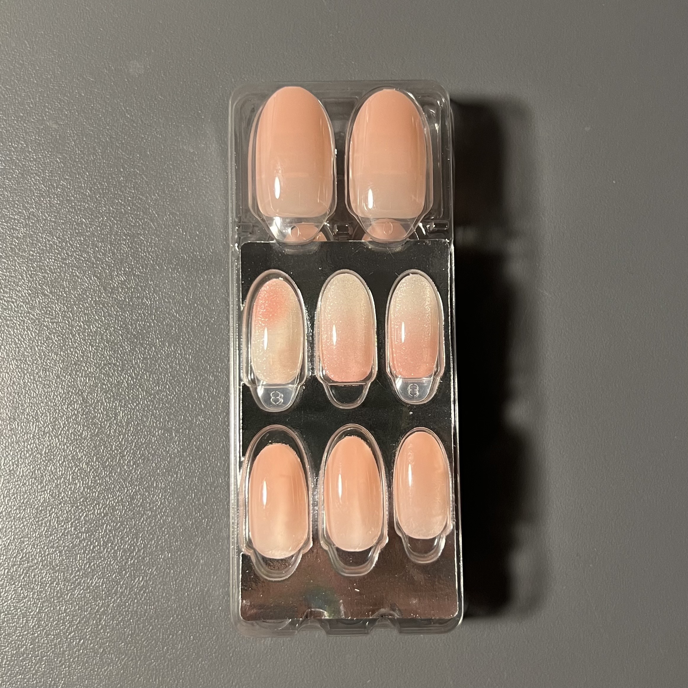
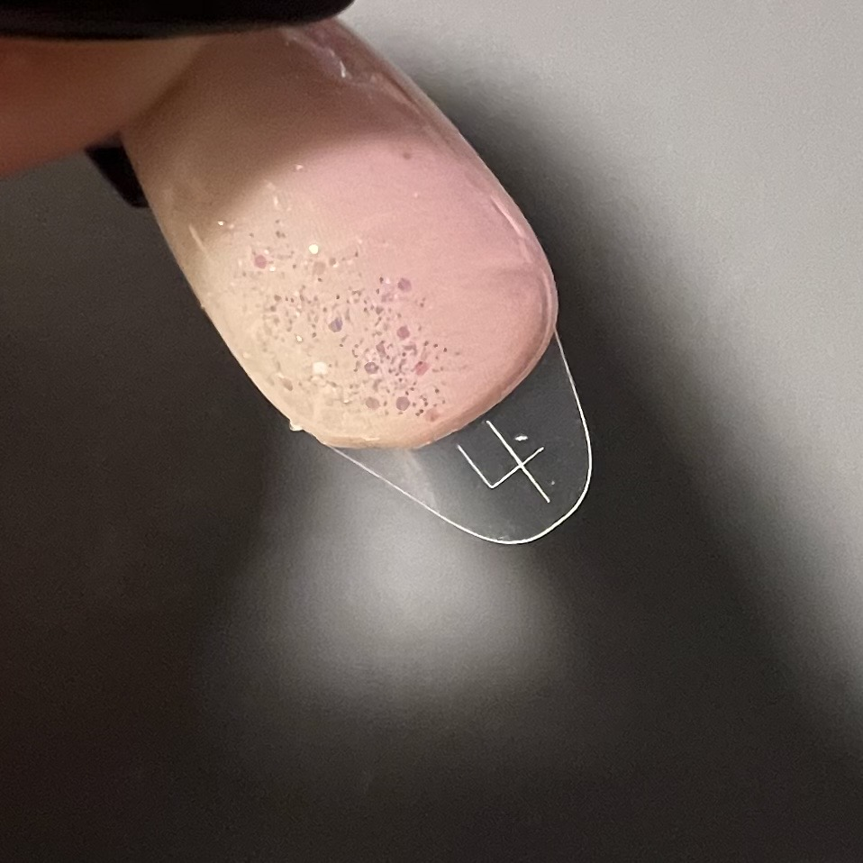
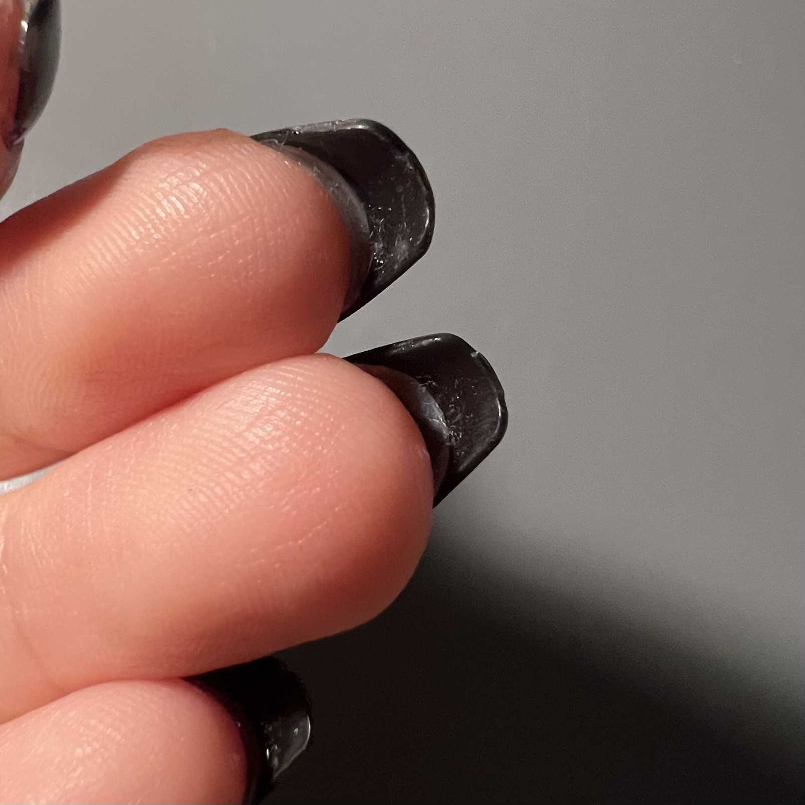

Step 1
손톱 크기에 맞는 네일팁 사이즈를 찾는다.
→
Step 2
네일팁에 부착된 네일 스티커의 접착력을 보존하기 위해 붙어 있던 보호제를 제거 후 큐티클 쪽부터 부착한다.
→
Step 3
만약 네일팁 지속력을 더 높이고 싶다면 네일팁과 손톱 사이의 틈에 탑젤을 발라 구워준다.
→
Result

손톱 크기에 맞는 네일팁 사이즈를 찾는다.
네일팁에 부착된 네일 스티커의 접착력을 보존하기 위해 붙어 있던 보호제를 제거 후 큐티클 쪽부터 부착한다.
만약 네일팁 지속력을 더 높이고 싶다면 네일팁과 손톱 사이의 틈에 탑젤을 발라 구워준다.